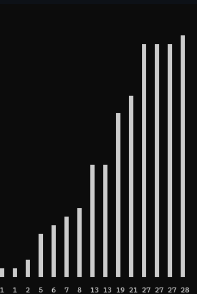
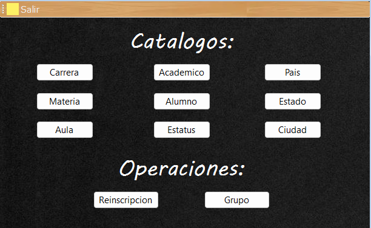
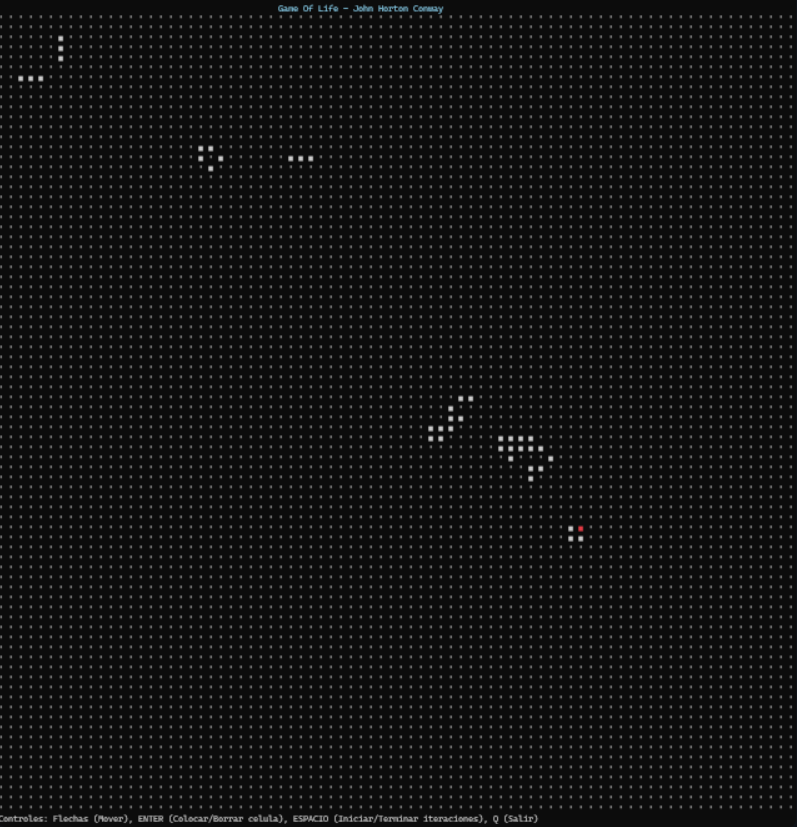
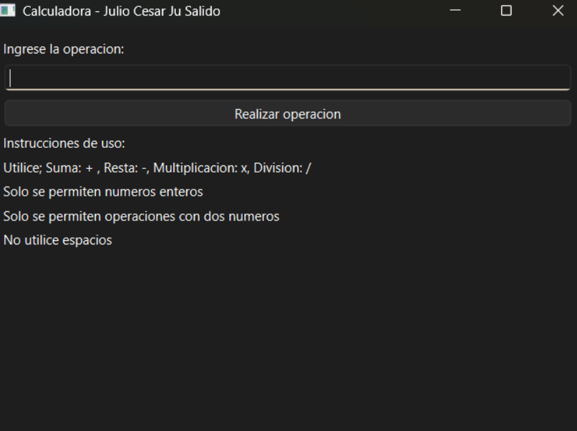
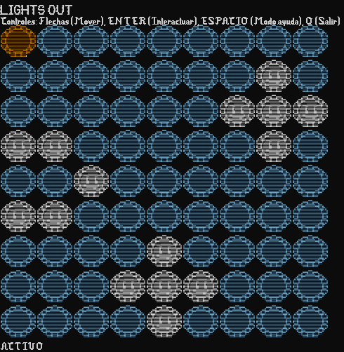
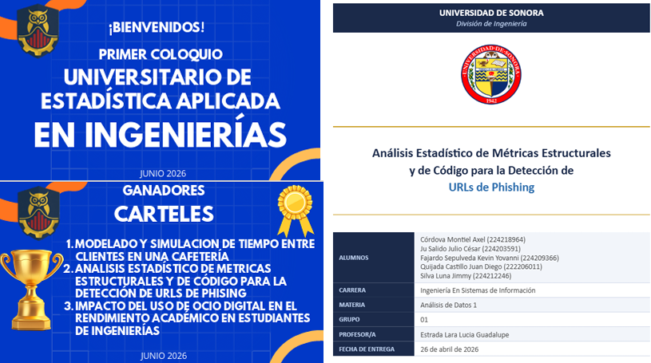
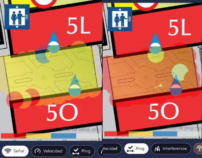
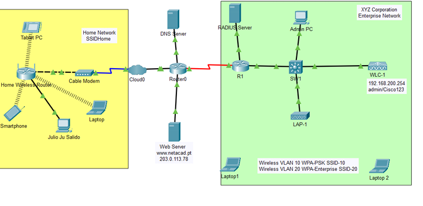
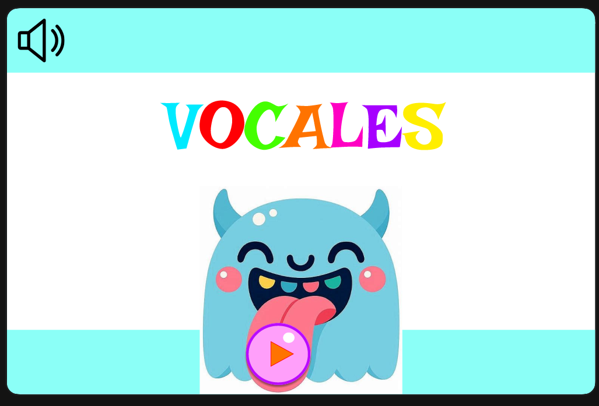

01Algoritmos de ordenamiento
Este proyecto cuenta con tres archivos .py donde se representa visualmente utilizando terminal algunos de los algoritmos de ordenamiento existentes.
Ver proyectoLO QUE HE DESARROLLADO
Una selección de trabajos y prácticas de desarrollo de software que he creado.

01Este proyecto cuenta con tres archivos .py donde se representa visualmente utilizando terminal algunos de los algoritmos de ordenamiento existentes.
Ver proyecto
02Sistema de escritorio desarrollado en C# y Windows Forms para la gestión de información académica y administrativa de una institución educativa.
Ver proyecto
03Implementación del Juego de la Vida de Conway desarrollada en Python y ejecutada directamente desde la terminal.
Ver proyecto
04Aplicación de escritorio desarrollada en Python utilizando PySide6. El programa permite realizar operaciones básicas entre dos números enteros mediante una interfaz gráfica.
Ver proyecto
05Juego de Lights Out desarrollado en Python para ejecutarse directamente en la terminal. El objetivo es apagar todas las luces del tablero utilizando el movimiento del jugador y activando o desactivando las casillas.
Ver proyectoTRABAJOS Y DOCUMENTACIÓN
Artículos, documentos y apuntes sobre problemas que he resuelto donde no está involucrado el desarrollo de software.

01Realicé en equipo un documento en donde se analizan los patrones en la estructura de sitios web de phishing utilizando intervalos de confianza, pruebas de hipótetsis, analisis de correlación y regresión. Esto con el objetivo de determinar el comportamiento que estos tienen para su detección.

02En equipo realicé una documentación analizando la red de la Universidad de Sonora en un área utilizando Wireshark e InSSIDer. Esto con el objetivo de saber la calidad de red y proponer soluciones a sus problemas.

03Realicé múltiples configuraciones de redes simuladas en Cisco Packet Tracer.

04Realicé en equipo el diseño de distintas interfaces en Figma, ya sea para videojuegos o aplicaciones.